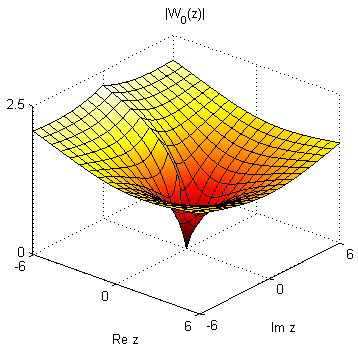
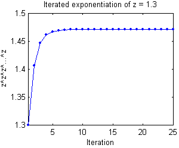

| lambertw | |
| by Pascal Getreuer | |
The MATLAB function lambertw included in this package is a self-contained M-function implementing the Lambert W function, also known as the W function or "product log." It is equivalent to the numerical mode of the Symbolic Math Toolbox's lambertw, however, no toolboxes are required to use this function.
w = lambertw(z) computes the principal value of the Lambert W function, W0. The input z may be a complex scalar or array. For real z, the result is real on the principal branch for z &ge -1/e.
w = lambertw(b,z) specifies which branch of the Lambert W function to compute. If z is an array, b may be either an integer array of the same size as z or an integer scalar. If z is a scalar, b may be an array of any size.
The Lambert W function is defined as the function W(z) such that
W(z) eW(z) = z
for all complex values z. As log z is the inverse of ez, W(z) is the inverse of z ez. Like the complex logarithm, the Lambert W function is multivalued with a countably infinite number of branches. The branches are enumerated by the integers and are conventionally denoted by Wk for the kth branch.
The principal branch, W0(z), is real-valued for -1/e ≤ z. If -1/e ≤ z < 0, then the branch W-1(z) is also real-valued. In the complex plane, a surface plot of |W0(z)| is
x = linspace(-6,6,51); y = linspace(-6,6,51); [x,y] = meshgrid(x,y); w = lambertw(x + i*y); surf(x,y,abs(w)); axis([-6,6,-6,6,0,2.5]); view(40,32); xlabel('Re z'); ylabel('Im z'); title('|W_0(z)|'); |  |
Although the Lambert W function may not be so widely known as the inverse trigonometry functions, it has essentially the same purpose as acos, asin, etc. as a building-block tool for solving equations. The general approach is to manipulate all occurrences of the unknown variable x into an expression of the form f(x)ef(x).
Problem 1. Solve y = (x - 1) e2x for x.
Solution: The right-hand side is close to the necessary form f(x)ef(x), but some manipulation is necessary to change the factor (x - 1) and the exponent 2x into the same expression. Multiplying both sides by 2,
2y = (2x - 2) e2x.
This form is closer yet, the exponent is only missing the -2. Multiplying both sides by e-2 achieves the desired form,
2e-2y = (2x - 2) e2x-2.
At this point, the Lambert W function can be applied to yield
W(2e-2y) = 2x - 2,
which leads to the solution x = W(2e-2y)/2 + 1. Note that since W is multivalued, the solution is multivalued; there are multiple values of x satisfying the equation.
Problem 2. Solve bx = xa for x.
Solution: In this problem, there is initially no visible instance of the exponential function. Rewrite bx as ex log b, revealing
| ex log b | = | xa |
| ex (log b)/a | = | x. |
Divide the exponential over to the right-hand side, and multiply by -(log b)/a to find
| 1 | = | x e-x (log b)/a |
| -(log b)/a | = | (-x (log b)/a) e-x (log b)/a. |
The right-hand side is now in the form f(x)ef(x) where the Lambert W function can be applied:
W(-(log b)/a) = -x (log b)/a.
The solution is x = -(a / log b) W(-(log b)/a).
Problem 3. An old result [1] is the closed-form expression for iterated exponentiation:
| z z z ... = | W(-log z) | . |
| -log z |
Find z such that z z z ... = 2.
Solution: Using the formula,
| -W(-log z) / log z | = | 2 |
| W(-log z) | = | -2 log z |
| -log z | = | -2 log z e-2 log z |
| e2 log z | = | 2 |
| z | = | 21/2. |
The following command evaluates Wk(1) for k = -4,... 4:
w = lambertw((-4:4).',1)
w = -3.1630 -23.4277i -2.8536 -17.1135i -2.4016 -10.7763i -1.5339 - 4.3752i 0.5671 -1.5339 + 4.3752i -2.4016 +10.7763i -2.8536 +17.1135i -3.1630 +23.4277i
These values are all solutions of w ew = 1. It is easy to verify numerically that they are solutions:
w.*exp(w)
ans = 1.0000 - 0.0000i 1.0000 - 0.0000i 1.0000 + 0.0000i 1.0000 1.0000 1.0000 1.0000 - 0.0000i 1.0000 + 0.0000i 1.0000 + 0.0000i
Problem 3 in the previous section mentioned the formula for evaluating iterated exponentiation:
| z z z ... = | W(-log z) | . |
| -log z |
For example, set z = 1.3, then its iterated exponentiation is approximately zlim = 1.4710.
zlim = -lambertw(-log(z))/log(z)
zlim =
1.4710
To verify this, computing z^z^z^...^z through 40 iterations shows that the iterated exponentiation does indeed converge to zlim.
zz(1) = z; zlim = -lambertw(-log(z))/log(z); for k = 1:40 zz(k+1) = z^zz(k); end plot(zz,'.-');
k zz zlim-zz 1 1.4065 0.065 2 1.4463 0.025 3 1.4615 0.0095 4 1.4673 0.0037 5 1.4696 0.0014 6 1.4704 0.00055 7 1.4708 0.00021 8 1.4709 8.1e-005 9 1.4710 3.1e-005 10 1.4710 1.2e-005 20 1.4710 8.9e-010 30 1.4710 6.5e-014 40 1.4710 2.2e-016 |  |
Ideally, lambertw(b,z)*exp(lambertw(b,z)) = z for any complex z and any integer branch index b, but this is limited by machine precision. The inversion error |lambertw(b,z)*exp(lambertw(b,z)) - z| is small but worth minding.
Experimentation finds that the error is usually on the order of |z|´10-16 on the principal branch. This test computes the inversion error over the square [-10,10]´[-10,10] in the complex plane, large enough to characterize the error away from the branch points at z = 0 and -1/e.
N = 81; % Use NxN points to sample the complex plane R = 10; % Sample in the square [-R,R]x[-R,R] x = linspace(-R,R,N); y = linspace(-R,R,N); [xx,yy] = meshgrid(x,y); z = xx + 1i*yy; for b = -4:4 w = lambertw(b,z); InvError = abs(w.*exp(w) - z); fprintf('Largest error for b = %2d: %.2e\n',b,max(InvError(:))); end
Largest error for b = -4: 2.51e-014 Largest error for b = -3: 2.39e-014 Largest error for b = -2: 1.39e-014 Largest error for b = -1: 7.94e-015 Largest error for b = 0: 5.40e-015 Largest error for b = 1: 7.94e-015 Largest error for b = 2: 1.39e-014 Largest error for b = 3: 2.39e-014 Largest error for b = 4: 2.51e-014
The Lambert W function is implemented numerically with approximations from series expansions followed by root-finding. Depending on the desired branch and the proximity to the branch points at z = 0 and -1/e, different series expansions are used as initializations to the root-finder.
As developed in [2], lambertw uses Halley's method, a fourth-order extension of Newton's root-finding method. Convergence is very fast, usually requiring fewer than 5 iterations to reach machine accuracy.
| [1] G. Eisenstein, "Entwicklung von aa...." J. reine angewandte Math., vol. 28, 1844. |
| [2] R.M. Corless, G.H. Gonnet, D.E.G. Hare, G.J. Jeffery, and D.E. Knuth. "On the Lambert W Function." Advances in Computational Mathematics, vol. 5, 1996. |